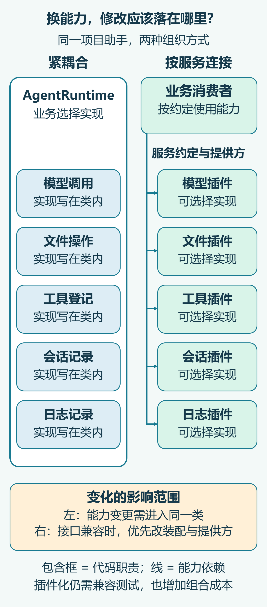
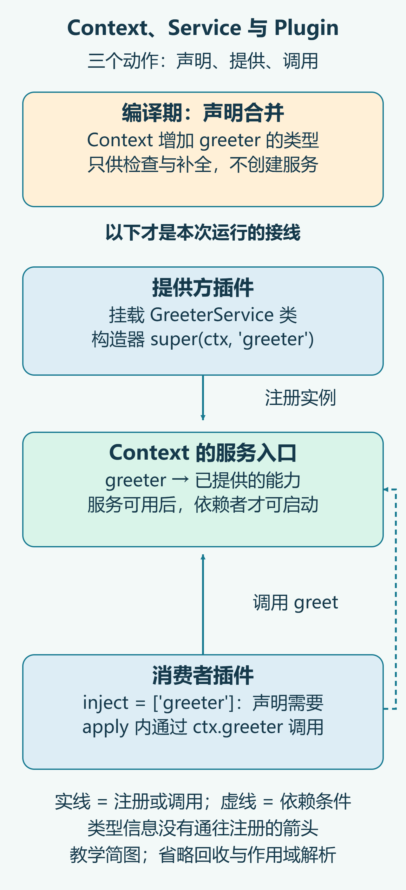
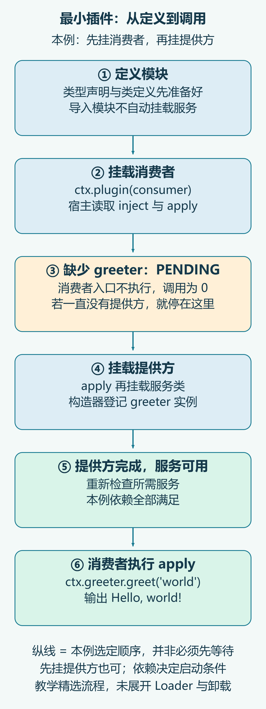

H05 作者审阅页 · 未发布。实际 LessonMarkdown 的静态渲染，折叠答案可展开；课程版本的复制交互已另经 React 挂载测试。图片在本页映射为相邻文件，不改变教材的 /course-media 路径。
一切皆插件：Cordis 的设计思想
100～135 分钟（概念与源码约 60～75 分钟，实践约 40～60 分钟；实际时长待试读）
项目助手长大以后，为什么换个模型也要改运行器？
H03 的项目助手会读取 README，再根据结果概括；H04 说明同一套能力可以供网页、命令行和程序客户端使用。现在团队准备继续开发：换一个模型提供方，增加读取工具，把会话换到另一种存储，还要让测试只运行内存能力。问题变成了：这些能力怎样接起来，才能让变化停在合适的地方？
本课官方事实继续锁定 Commit f3803c96974ad4a94195fb97e5c637e9c2a3afe3，其中 Cordis 为 4.0.6-alpha.1。固定源码与实测行为、明确标出的教学简化、署为“我们的分析”的设计判断分别表述，不追随最新分支替换 API。
先看一个容易写出来的方案。下列是教学简化的结构摘录，不是 Harness 源码或可接真实模型的程序。所有值都是虚构内存数据；readFile 这个教学方法并不读取磁盘。
class AgentRuntime {
files = new Map([['README.md', '公开项目：整理资料']]);
sessions = new Map<string, string[]>();
logs: string[] = [];
async callModel(text: string) { return `固定模型A：${text}`; }
readFile(path: string) { return this.files.get(path) ?? '未找到'; }
executeTool(name: string) {
if (name === 'read_readme') return this.readFile('README.md');
throw Error('UNKNOWN_TOOL');
}
async run(sessionId: string) {
this.logs.push('开始');
const material = this.executeTool('read_readme');
const reply = await this.callModel(material);
this.sessions.set(sessionId, [material, reply]);
this.logs.push('结束');
return reply;
}
}只有一个工具、一个固定模型时，这样很方便：打开一个类就能看到完整过程，调试也不用查注册来源。小型、稳定的一次性程序，保留这样的直接组织未必有问题。
需求增加后，修改开始互相牵连。换模型，要进入 callModel；增加工具，要改 executeTool 的分支；更换会话存储，要改 run 中的 Map.set；给无文件能力的场景运行，又要改 executeTool 或 run。单独测摘要业务时，还得带着文件、会话和日志状态。假如供应商响应字段也漏进 run，下一次更换供应商就不只改一个方法。
这些不是“类太长”一个问题。即便拆成五个文件，如果业务文件里仍直接创建固定模型、固定存储，文件分开了，选择实现的责任却没有分开。反过来，清楚的模块接口和普通函数参数已经能解决很多问题，不必一遇到修改就安装插件框架。
我们接下来试一种组织方法：模型、工具、会话与日志各自提供能力；消费者通过约定使用；装配方决定这次放进什么。Cordis 为这种组织增加了插件挂载、具名服务访问与依赖跟踪。
图一先回答“更换的连接点在哪里”。左右并排比较，同一行对应同一种职责。

右图减少的是消费者对具体实现的绑定，并没有消除依赖。装配方仍要选择提供方，接口变化仍可能影响消费者；错误配置也可能让能力一直不可用。标题“一切皆插件”表达本项目组织可扩展能力的方式，不表示每个函数都要变成插件。
用六分钟找回旧知识：文件分开，与能力接上
Stage 2 的 2.1 前端、API、服务端与数据库已经把一次保存按职责分开：页面接住输入，服务端检查，数据库保存。同一台电脑上也能有这些分工；因此今天的“服务”不能自动理解为另一个进程。
Stage 3 的 3.1 Provider 模块把“请求供应商、整理结果”集中在服务端。import / export 让一个模块使用另一个模块开放的符号；导入函数并不等于已经调用函数，更不表示对应 Cordis 插件已经挂载。模型 Key 留在服务端的边界也不会因改为插件而改变。
Stage 4 的 4.1 Agent Loop里，Tool Registry 是工具名单，Runtime 控制检查、执行和停止；模型只提议动作。今天不重新教授这条循环，而是问“名单、模型和会话这些能力由谁提供，运行器如何取得”。旧课的 Registry 分工不等于 Cordis 的插件注册表，也不能把旧课 Run/Step 或登录 Session 当作 Harness 的同名实现。
再补上两个读源码必需的词。TypeScript 的 interface（接口）描述“消费者需要的值具有什么形状”，例如 complete(text): Promise<string>；class（类）描述可创建对象的实现，new 才创建实例。接口不产生运行对象，也不会检查外部输入。依赖关系则是“我需要你的能力才能完成工作”，它既可能表现为模块导入，也可能表现为运行时服务需求，不能共用一个含糊箭头。
H02 已经用同一对象区分了三层：core/tools 是包，src/index.ts 是模块，ToolsService 注册后提供 ctx.tools 服务。H05 的新增内容是第四层：谁把模块里的入口挂成插件，并保证它需要的服务能够使用？ 上述旧课链接可选且沿用原权限；本节解释和练习自足，不要求购买旧课。原课重在应用开发，没有系统教过声明合并，本课会直接说明。
插件：把一项贡献交给宿主挂载
用一句话说，Plugin（插件）是一段按宿主约定接入运行环境的代码。比如“把原生工具执行器交给工具服务”的代码，不该每个应用入口再写一份。插件描述这项贡献，宿主决定何时挂载。
先用软件中的最小对照建立直觉：
// 普通模块导出：使用者自行调用它。
export function formatTitle(text: string) { return `项目：${text}`; }Cordis 消费者模块则可以同时导出 inject 与 apply(ctx)。区别不在文件后缀，也不在“函数有个特殊名字”，而在把这个入口交给 Cordis，参与宿主的挂载与依赖管理。直接 import 它，只会执行模块顶层代码；其中的 apply 还没有因名字而自动运行。模块若自己写了顶层副作用，导入当然可能产生副作用，但那也不是 Cordis 替它完成了挂载。
严格到本版本，Plugin 接受函数、可构造的类、带 apply 的对象三种入口形态，见 registry.ts:91–133 的类型。插件不必提供 Service，也可以只消费服务、登记工具或贡献其他行为。入门文档“插件是实现 Service 的对象”的一句概括，应结合教程的函数示例和这里的真实类型阅读，不能当成“所有插件必须继承 Service”的规定。
一个真实短插件在 原生执行器模块 25–35 行：
export const name = 'native-tool-executor'
export const inject = ['tools']
export function apply(ctx: Context): void {
ctx.tools.setExecutor(new NativeToolExecutor(ctx))
}输入是宿主给的 ctx；行为是创建执行器，再选择它；结果是挂载作用域中的工具服务有了这个执行器。这里的 apply 是模块导出函数，不属于 NativeToolExecutor 类。这个类实现 ToolExecutor，并没有继承 Cordis Service；插件入口是模块导出这一层。
常见误解是“能导入的函数都是插件”。一个格式化函数当然也能被包装成插件使用，但单凭 export 不会取得依赖等待、注册归属等行为。检查自己：只导入上面这个模块，没有调用 ctx.plugin(...)，是否已经执行 setExecutor？
想深入再看：核对一：导入没有自动完成挂载
没有。该模块的 setExecutor 位于 apply 内。宿主须把整个模块对象交给 Cordis，才能保留入口与 inject 元数据。若只传 module.apply，该函数不会自动携带模块另行导出的 inject。这正是练习 B 中要避免的错误。
服务：消费者要一项能力，不必挑选它的制造者
Service（服务）先理解为“对外提供、可以借用的一项能力”。摘要业务需要得到模型回答，没必要自己知道提供方怎样连接、怎样解析响应。把需求说成稳定接口，才能在接口保持兼容时更换实现。
下面是普通 TypeScript 教学接口，并非官方 LLM API：
interface Model { complete(text: string): Promise<string> }
interface Log { write(message: string): void }业务依赖 Model.complete 与 Log.write 的约定；装配方提供固定模型与内存日志，也可以提供另一组实现。接口需要约定输入、输出和失败含义，只有方法同名还不够。例如把“返回完整文本”换成“返回流”，就已经改变消费者要求，不能宣传为无改动替换。
在 Cordis 语境，服务是提供方注册、消费者按名称取得的运行时能力。Service 这个大写类则是帮助实现具名服务的基类。二者不能倒过来说成“服务就是一个 TypeScript interface”。官方教程的 Greeter提供 greet(who)，没有 HTTP，也没有独立服务器。
真实注册发生在 Service 构造器 42–58 行：子类调用 super(ctx, 'greeter') 后，构造器把实例交给 ctx.reflect.provide(...)。服务名称 greeter 是查找约定，实例才实际完成问候。
Service 不是唯一注册途径，底层还有 ctx.provide(name, value)，见 reflect.ts:277–305。本课实践沿用教程的子类方式，先不增加第二套写法。同一作用域里不能同时重复注册同名服务；替换要有明确装配与生命周期策略，不能随手再挂一个覆盖旧实例。
常见误解是“稳定接口保证所有实现效果相同”。接口让消费者知道怎样调用；响应质量、错误、性能和能力兼容仍要测。检查自己：如果只把类写好、导出，又从未创建或挂载它，greeter 服务存在了吗？
想深入再看：核对二：类定义不是能力实例
不存在。class 提供构造与方法定义；本例须让 Cordis 挂载子类，运行构造器，执行 super(ctx, 'greeter')。一个包里可以同时有接口、实现和插件入口，包的存在不是实例已就绪的证据。
Context：从当前插件所在的位置取得能力
有了服务，还需要统一的取用方式。Context（上下文）可以先想成“当前插件接入系统的工作入口”：插件从这里访问服务，向宿主登记自己的贡献。入口本身不替模型回答，也不替文件工具读取。
严格地说，本版本的 Context 是带代理访问和作用域信息的依赖容器，连接服务解析、插件注册、事件与登记归属。它不是任意代码都可随手修改的全局变量。根 Context 与插件收到的子 Context 有关系，但不必是同一个对象；不同作用域下，同名服务也可能解析到不同实现。
在 context.ts:70–84中，new Context() 创建代理并准备框架内建服务。这不会自动装入 Harness 全部业务服务。插件子上下文在 fiber.ts:234–245创建；作用域解析的规则在 Context.isolate() 注释与实现。本节认出存在这个边界即可，H08 再研究组合中的作用域。
所以 ctx.<key> 是服务访问写法，不是另一种服务类型。拿 ctx.tools 举例：ctx 是上下文入口，tools 是约定键，取得的能力是工具服务。调用 ctx.tools.execute(...) 才进一步请求该服务做事。也并非 ctx 的每个属性都是业务服务，例如 baseUrl 是元数据，plugin 等方法由框架接入。
| 已在 H03 见过的入口 | 借用的能力 | 这里不能推断什么 |
|---|---|---|
ctx.tools | 工具登记、选择与执行服务 | 不表示每个工具都获准执行 |
ctx.llm | 模型适配器登记与调用边界 | 不等于具体供应商适配器，更不证明凭据可用 |
ctx.sessions | 内存会话管理 | 不自动提供磁盘持久化 |
三行的真实身份见架构表 57–65 行。其中模型类名是 LlmRuntime，354–364 行；会话对象是 SessionStore，1057–1064 行。不要把它们都改叫某个泛化的 Service 类名。
常见误解是“既然有统一入口，就能访问所有能力”。插件上下文的属性访问会受依赖声明与作用域约束；根上下文的直接访问行为不能照搬给插件。属性代理 144–166 行明确检查这些条件。检查自己：同一个服务键，为什么仍不能证明所有插件取得同一对象？
想深入再看：核对三：统一名字仍有访问位置
服务解析会结合上下文的作用域；插件还需要正确声明依赖。不要把 ctx 保存成一个任意地方都能用的“万能全局对象”。本课最小实验都在同一根下、无额外 isolate，避免一开始计算完整作用域树；这不是说真实 Harness 没有作用域。
依赖注入：把“我需要什么”与“谁来提供”分开
Dependency Injection（依赖注入）先用普通参数理解：业务不在内部 new 一个固定模型，由外部装配方把符合接口的模型交给它。变化从业务内部移到了装配处。练习 A 就只做这一步，它完全不需要 Cordis。
Cordis 的具体方式是：插件用 inject 声明需要哪些具名服务；框架在这些服务对它可用后启动插件；插件通过传入的 ctx 调用服务。这里没有把所有对象复制进参数，也没有因为写了 inject 就下载、导入或创建提供方。
例如 inject = ['greeter'] 只有一项需求。super(ctx, 'greeter') 是提供方执行注册；ctx.greeter.greet('world') 是消费者调用。它们分别是声明、提供、使用，少哪一项都不能靠另两项代替。图二把这三件事放在不同位置。

真实路径从 RegistryService.plugin()，316–335 行开始：接收插件与配置，识别入口，用 Inject.resolve(plugin.inject) 归一化需求，再创建承载这次挂载的 Fiber。Fiber 在这里先理解为“这次插件挂载的运行记录”，完整状态与回收留 H07。
Fiber._checkImpl() 与 _refresh()，597–623 行检查实现是否可用：没有实现，或可用性检查不通过，就不能激活；列出的每项都满足，才进入加载。注册记录存在与服务对消费者可用仍有区别，提供方尚未完成初始化时也不能贸然使用。
缺少必需服务时，消费者保持 PENDING（等待依赖），不执行 apply，不是“执行到一半才发现 undefined”。官方教程 59–72 行还指出：如果没有其他活动，Node 可能以 0 退出而没有问候输出。因此退出码 0 不证明插件业务完成。H04 的应用启动另有必需条目审查，不能把这个库级例子推广为完整 Harness 必定静默退出。
常见误解是“把提供方放在配置列表第一行就等价于 inject”。列表位置不能表达依赖，也不能保证异步初始化完成。检查自己：交换提供方和消费者的挂载顺序，为什么正确程序仍可完成？如果完全去掉提供方，又会怎样？
想深入再看：核对四：顺序由实际可用性决定
消费者先出现时先等待，所需服务随后可用便可启动；提供方先出现时也必须真正完成相应初始化。完全没有提供方，消费者一直 PENDING、调用次数为 0。不能用多等几秒、交换列表顺序或增加类型声明来创造服务。可选服务有显式探测方式，但必需能力不应靠删掉 inject 伪装成可选。
apply 与注册：宿主何时把贡献接进系统
apply(ctx) 可以理解为“挂载时请做这些接入工作”。例如原生执行器在这里调用 setExecutor；问候服务的提供方在这里挂载服务类。它是宿主启动插件行为的入口，不表示每来一条用户消息就重跑一次 apply。请求业务通常经已注册的能力继续发生。
严格到实现，函数/对象插件的入口被框架用 (ctx, config) 调用；类插件则被构造，并可执行初始化方法，见 Fiber 的入口执行分支 247–260 行。因而 Service 子类也可直接挂载，不要求每个类都另写一个名叫 apply 的方法。本节使用教程的外层 apply，便于看出“提供方插件挂载服务类”这层关系。
注册则把实际对象、工具等贡献接入宿主。比如 ctx.plugin(GreeterService) 是挂载动作，构造器里的 super(...) 才执行具名服务登记；ctx.tools.setExecutor(...) 是在已有工具服务中选择执行器，不是再提供一项名叫 tools 的服务。
Cordis 把许多注册归入可撤销的 effect，便于所属插件结束时移除。真实 provide() 在 277–305 行返回移除登记的函数。本节只建立“登记应有归属”的直觉；卸载顺序、资源清理、依赖消失与热重载留 H07。撤销注册也不会自动撤销插件已经写出的文件或已经发生的外部操作。
常见误解是“我手动 apply(root)，效果就一定与挂载一样”。这会绕过插件的独立运行记录和依赖声明处理。检查自己：如果 apply 里面访问了所需服务，为什么不能把直接调用当作练习 B 的验证方法？
想深入再看：核对五：需要验证宿主契约
直接调用只验证普通函数执行，没有验证 Cordis 是否读到了 inject、依赖不足时是否阻止入口、服务可用后是否激活。练习 B 必须通过真实 ctx.plugin(模块对象)；类型检查或手动函数调用都不足以证明依赖行为。
读一对真实模式的最小插件
选择的是锁定 Commit 的官方服务教程 11–56 行中的 Greeter 模式。下面保留其 API、名称、输入和输出，压缩注释与排版；这是有来源的教学改编，不是重新实现 DI 框架。许可证与改编说明随交付保留。
提供方分三段读。第一段给 TypeScript 补信息，第二段描述服务实现和运行时登记，第三段定义模块入口。
先把同一文件里的两段接线放在主线看。下面是摘录，完整文件在折叠区；GreeterService 的类定义也在完整文件中：
declare module '@deepseek-ai/cordis' {
interface Context { greeter: GreeterService }
}constructor(ctx: Context) { super(ctx, 'greeter'); }第一段让编译器认识一个属性，第二段要在对象构造时才执行。删掉第二段的实际挂载路径，第一段还在也不会产生服务；这就是接下来要验证的区别。
想深入再看：完整提供方：greeter.ts
// 改编自锁定版本 docs/cordis-tutorial/03-services.zh.md:11–35。
import { Service, type Context } from '@deepseek-ai/cordis';
declare module '@deepseek-ai/cordis' {
interface Context { greeter: GreeterService }
}
export class GreeterService extends Service {
constructor(ctx: Context) { super(ctx, 'greeter'); }
greet(who: string) { return `Hello, ${who}!`; }
}
export const name = 'greeter';
export function apply(ctx: Context) { ctx.plugin(GreeterService); }greet 输入一个名字，返回问候文本；不读环境、不发网络。构造器输入当前上下文，通过 super 登记实例。外层 apply 挂载 GreeterService 类；类被构造后实际登记能力。缺失挂载、同一作用域重复登记或启动抛错都可能使预期服务不可用。
声明合并提供的是类型信息，不会自动创建或注册运行时服务。 declare module 将 greeter: GreeterService 合并进 Context 的类型描述，编译器由此知道 greet 接受字符串；它在发射的 JavaScript 中消失。即使只导入这份文件，类型已被看见，类也已被定义，服务仍可能完全没有挂载。反过来，运行时注册过一个名字，也不会让编译器自动知道其全部方法。
消费者只要使用这项能力，无需导入提供方类。其类型检查单元仍要包含上面的服务声明；本实验同时包含两份文件。省略声明文件不代表“应该用 any 解决”，应让正确的服务契约进入类型检查。
想深入再看：完整消费者：consumer.ts
// 改编自同教程:49–56；必须把整个模块对象挂载，以保留 inject。
import type { Context } from '@deepseek-ai/cordis';
export const name = 'consumer';
export const inject = ['greeter'];
export function apply(ctx: Context) {
console.log(ctx.greeter.greet('world'));
}逐段看输入、行为、结果：模块的 inject 是服务需求；宿主传入消费者的上下文；apply 调用 ctx.greeter.greet('world')；成功输出 Hello, world!。name 只是诊断显示元数据，不负责注册服务，也不必与服务键相同。
图三把“定义代码”与“本次运行”分开。先读正常纵线，再看缺失依赖旁支。

本课的精读路线共五个源码文件，按问题选择短段，不要求通读五个文件：
| 顺序与文件 | 先看哪个符号，再看什么 | 要回答的问题 |
|---|---|---|
1 · tool-executor-native/src/index.ts | 25–35 行的 inject/apply，再回看类声明 | 一个真实插件究竟贡献什么？ |
2 · vendor/cordis/src/service.ts | Service 构造器 42–58 | 服务实例在哪一行登记？ |
3 · vendor/cordis/src/context.ts | 构造器 70–84，再看 109–125 的注释 | ctx 为什么是解析入口、为何不是全局单例？ |
4 · vendor/cordis/src/registry.ts | Plugin 类型，再看 plugin() 316–335 | 模块对象和 inject 怎样进入宿主？ |
5 · vendor/cordis/src/fiber.ts | _checkImpl/_refresh 597–623，再看 247–260 | 什么条件允许入口开始执行？ |
以上链接已在对应概念段给出。教程、reflect.ts、Harness 服务和测试是辅助核对入口。不要把阅读路线当成函数调用顺序：实际是挂载消费者后查依赖；提供方的 Service 注册及激活让依赖可用；再进入消费者入口。构造器登记的瞬间也不能一概当成异步初始化已完成，实验会专门测这个反例。
回到 Harness：请求流程借用的能力由谁准备
H03 从“实例、服务和执行器已就绪”开始。现在可以给那个前提补上证据，而无需重新讲 Turn/Step。
ToolsService 的类型声明、类和构造器与99–118 行分别告诉编译器 ctx.tools 的类型、声明需要 systemPrompt、通过 super(ctx, 'tools') 登记能力。原生执行器再声明需要 tools 并调用 setExecutor。提供工具服务、给工具服务选择执行器、向注册表添加某个工具，是不同层次。
默认 AgentLoop 在 292–318 行声明 agents、sessions、llm、tools、systemPrompt 和 sessionProjections，自己登记为 agentLoop。它同时是消费者和提供方，两个身份并不冲突。等这些连接成立，H03 中的运行实例才有条件借用模型、工具和会话能力；插件激活本身仍不证明某次模型请求成功。
H03 的工具分支在 ReactLoopAgent.step() 586–597 行消费 this.loopCtx.tools.execute(...)；工具服务再选择当前执行器并委托。这是运行时调用，不能推成工具包反向静态导入所有执行器。
模型也有两层：ctx.llm 提供共享适配与调用边界，具体供应商适配器在该服务上登记，见架构文档 150–155 行。因此更换供应商不一定是更换名叫 llm 的服务。会话同样不能简单说成“换掉 sessions 就完成存储迁移”：SessionStore 负责内存管理，持久化有独立契约与提供方。H05 建立分工，具体适配和迁移后续再学。
选读工具测试的 setup，35–41 行：先挂提示词服务、工具服务，再挂原生执行器。进一步在组合测试 66–83、103–128 行找真实服务、Mock 模型和模型工具呈现断言。它们是本课静态选读，不冒称已运行完整官方测试。
**我们的分析：**模块可分工、提供方可选择，能缩小替换影响，测试也可以单独组合所需能力。代价是诊断要追查服务键、作用域、提供方状态和装配来源；接口演进与多组合测试也成为维护工作。两个固定函数就能完成的小工具，普通模块与参数注入往往更易读。插件化在能力多、替换频繁、存在多种组合时更有价值，而非普遍优越。
练习 A：先用普通接口解开两项依赖
在自己的新建空目录中建立 a-starter.ts。这是教学程序，没有 Cordis，模型与日志直接写在业务方法里。
想深入再看：练习 A 起始程序
// 练习 A：教学简化；纯内存、固定模型，没有真实 API 或持久日志。
export class NoteAgent {
async summarize(text: string) {
const reply = `固定模型A：${text}`;
console.log(`完成：${reply}`);
return reply;
}
}想深入再看：练习 A 完整参考答案
// 普通 TypeScript 参数注入，不是 Cordis 运行时。
export interface Model { complete(text: string): Promise<string> }
export interface Log { write(message: string): void }
export class NoteAgent {
constructor(private model: Model, private log: Log) {}
async summarize(text: string) {
const reply = await this.model.complete(text);
this.log.write(`完成：${reply}`);
return reply;
}
}
// 装配方选择实现；消费者 NoteAgent 不知道具体提供方。
export function assemble(prefix: string, entries: string[]) {
const model: Model = { async complete(text) { return `${prefix}：${text}`; } };
const log: Log = { write(message) { entries.push(message); } };
return new NoteAgent(model, log);
}模型与日志独立为 Model 和 Log。NoteAgent 只知道完成文本与写日志的方法；assemble 提供固定模型及内存日志，并把它们交给业务实例。改前缀或换符合约定的提供方，装配处变化，summarize 不必改；若接口或失败语义改变，则要重新审消费者。
本参考用构造参数注入，已经能验证解耦；它不是 Cordis Plugin，没有 Context、PENDING 或框架回收。不能为了名称听起来统一，把它叫作官方运行时。本课自动测试会核 A/B 实际返回值和日志内容，以及模型失败后没有成功日志。
练习 B：用真实 Cordis 连接服务
先预测三项结果：只挂消费者；先消费者后提供方；服务存在但消费者没有 inject。不要先看输出猜理由。
想深入再看：完整装配程序：demo.ts
// 库级教学装配：使用真实 Cordis；不经过 Harness Profile 或 Loader。
import assert from 'node:assert/strict';
import { Context, FiberState } from '@deepseek-ai/cordis';
import * as greeter from './greeter.ts';
import * as consumer from './consumer.ts';
const ctx = new Context();
try {
const waiting = ctx.plugin(consumer);
await waiting;
assert.equal(waiting.state, FiberState.PENDING);
assert.equal(ctx.get('greeter'), undefined);
console.log('缺失依赖：PENDING；尚未调用 greet');
if (process.argv[2] !== '--missing') {
await ctx.plugin(greeter);
// 外层提供方还挂载了子类插件；显式等待子插件与消费者稳定。
for (const fiber of ctx.registry.get(greeter.GreeterService)!.fibers) await fiber.await();
await waiting;
assert.equal(waiting.state, FiberState.ACTIVE);
console.log('依赖满足：ACTIVE');
}
} finally { await ctx.fiber.dispose(); }这里 await 等待的是当前挂载工作稳定，不保证未来缺失的服务会出现；PENDING 也可以是稳定状态。提供方外层 apply 还挂了一个子类插件，示例因此显式等待子类和消费者，再断言 ACTIVE。不要把“await 返回了”孤立当作应用所有服务已就绪。对应 Fiber.await() 725–737 行。
两条可复验路线
已有独立、锁定 Commit、依赖已准备好的 Harness checkout时，可以把这几个课件文件复制到那份 checkout 新建的 tmp/h05-cordis-lab，在该目录运行。沿用官方教程所需 Node.js >=24.9.0 和固定仓库工具链；不在 AI Foundry 根安装 Harness 依赖，不把此目录指向个人项目或 Home。下面的相对路径以这个新目录为前提：
node ../../node_modules/tsx/dist/cli.mjs --tsconfig ../../tsconfig.base.json demo.ts
node ../../node_modules/tsx/dist/cli.mjs --tsconfig ../../tsconfig.base.json demo.ts --missing
node ../../node_modules/tsx/dist/cli.mjs --tsconfig ../../tsconfig.base.json --test lab.test.ts测试需要同时复制 a-reference.ts 与下方 lab.test.ts。路径不存在时先核 checkout 的依赖准备，不能随意安装 npm 上另一个同名 Cordis 版本，也不要求为了本课运行整套 Harness。官方教程的 Loader/YAML 启动方式是另一路径，本课不依赖 Loader。
作者复验使用随交付的 docs/deepseek-harness-v2/h05/scripts/run-labs.mjs，从 AI Foundry 根运行：
node docs/deepseek-harness-v2/h05/scripts/run-labs.mjs它读取固定源码缓存（换机用 HARNESS_SOURCE_CACHE 指向同 Commit），在 OS 新临时目录复制课程夹具，以 tsx 路径映射加载真实 vendor/cordis 与 vendor/cosmokit，不模拟 Cordis。它不经过 Profile、Loader 或完整 Agent 应用。临时目录保留，报告给出路径；脚本不清理目录、不读取个人配置。类型测试先按 Cordis 的包编译选项生成声明，再对课程消费者做严格检查，避免把 Host 全仓混进单一检查单元。
第一条 demo 预期依次出现：
缺失依赖：PENDING；尚未调用 greet
Hello, world!
依赖满足：ACTIVE--missing 只有第一行，退出 0，没有问候；这就是“过程没报错”与“消费者已运行”的差别。lab.test.ts 有 9 项行为测试；作者 runner 还检查故意删除 inject 的 demo 非零退出、错误参数触发 TS2345，以及声明合并在发射代码中消失。
想深入再看：完整自动化测试：lab.test.ts
import test from 'node:test';
import assert from 'node:assert/strict';
import { Context, FiberState, Service } from '@deepseek-ai/cordis';
import * as greeter from './greeter.ts';
import * as consumer from './consumer.ts';
import { assemble, NoteAgent } from './a-reference.ts';
test('A：更换模型与日志提供方，消费者代码保持相同', async () => {
const a: string[] = [], b: string[] = [];
assert.equal(await assemble('A', a).summarize('公开资料'), 'A：公开资料');
assert.equal(await assemble('B', b).summarize('公开资料'), 'B：公开资料');
assert.deepEqual(a, ['完成：A：公开资料']);
assert.deepEqual(b, ['完成：B：公开资料']);
});
test('A：模型失败时不记成功日志，失败向调用方传播', async () => {
const logs: string[] = [];
const agent = new NoteAgent({ async complete() { throw Error('MODEL_FAILED'); } }, { write(s) { logs.push(s); } });
await assert.rejects(agent.summarize('fixture'), /MODEL_FAILED/);
assert.deepEqual(logs, []);
});
async function providerReady(ctx: Context) {
await ctx.plugin(greeter);
for (const f of ctx.registry.get(greeter.GreeterService)!.fibers) await f.await();
}
for (const order of ['provider-first', 'consumer-first']) {
test(`B：真实 Cordis ${order}，greet 恰好调用一次`, async t => {
const ctx = new Context(), output: string[] = [];
const spy = t.mock.method(console, 'log', (s: string) => { output.push(s); });
try {
if (order === 'provider-first') await providerReady(ctx);
const f = ctx.plugin(consumer);
await f;
if (order === 'consumer-first') {
assert.equal(f.state, FiberState.PENDING);
assert.deepEqual(output, []);
await providerReady(ctx);
await f;
}
assert.equal(f.state, FiberState.ACTIVE);
assert.deepEqual(output, ['Hello, world!']);
} finally { await ctx.fiber.dispose(); spy.mock.restore(); }
});
}
test('B：只有类型/模块导入，无运行时注册，消费者 PENDING 且无输出', async t => {
const ctx = new Context(), output: string[] = [];
const spy = t.mock.method(console, 'log', (s: string) => { output.push(s); });
try {
// greeter.ts 已被导入；其 declare module 与 class 定义都不会挂载服务。
const f = ctx.plugin(consumer); await f;
assert.equal(f.state, FiberState.PENDING);
assert.equal(ctx.get('greeter'), undefined);
assert.deepEqual(output, []);
} finally { await ctx.fiber.dispose(); spy.mock.restore(); }
});
test('B：遗漏 inject，即使服务存在，独立兄弟插件的属性访问也失败', async () => {
const ctx = new Context();
try {
await providerReady(ctx);
const f = ctx.plugin({ apply(inner: Context) { inner.greeter.greet('world'); } });
await assert.rejects(f.await(), /cannot get property "greeter" without inject/);
assert.equal(f.state, FiberState.FAILED);
} finally { await ctx.fiber.dispose(); }
});
test('B：替换实现保持 greet 契约，同一消费者无需修改', async t => {
const ctx = new Context(), output: string[] = [];
const spy = t.mock.method(console, 'log', (s: string) => { output.push(s); });
class ChineseGreeter extends Service {
constructor(inner: Context) { super(inner, 'greeter'); }
greet(who: string) { return `你好，${who}！`; }
}
try {
await ctx.plugin(ChineseGreeter);
await ctx.plugin(consumer);
assert.deepEqual(output, ['你好，world！']);
} finally { await ctx.fiber.dispose(); spy.mock.restore(); }
});
test('B：提供方尚在异步初始化，消费者仍不提前执行', async () => {
const ctx = new Context();
const gate = Promise.withResolvers<void>();
let calls = 0;
const f = ctx.plugin({ inject: ['greeter'], apply(inner: Context) { assert.equal(inner.greeter.greet('x'), 'ready:x'); calls++; } });
const p = ctx.plugin({ async apply(inner: Context) {
inner.provide('greeter', { greet: (s: string) => `ready:${s}` });
await gate.promise;
} });
try {
await f;
assert.equal(f.state, FiberState.PENDING); assert.equal(calls, 0);
assert.equal(ctx.get('greeter'), undefined);
gate.resolve(); await p; await f;
assert.equal(calls, 1); assert.equal(f.state, FiberState.ACTIVE);
} finally { gate.resolve(); await ctx.fiber.dispose(); }
});
test('B：同一作用域重复注册会失败；不能靠再次挂载覆盖实现', async () => {
const ctx = new Context();
try {
await ctx.plugin(greeter.GreeterService);
class Duplicate extends Service { constructor(inner: Context) { super(inner, 'greeter'); } }
const duplicate = ctx.plugin(Duplicate);
await assert.rejects(duplicate.await(), /has been registered/);
} finally { await ctx.fiber.dispose(); }
});想深入再看：练习 B 完整参考解释与替换实现
上文三份完整代码就是提供方、消费者和装配的参考实现。正常路径先见 PENDING，提供方完成后只输出一次 Hello, world!。一直缺失服务则保持 PENDING，调用数为 0。类定义和声明合并都存在于检查单元，却没有自动执行 super(...)。
遗漏 inject 是另一种错误：本例消费者是没有继承该依赖的独立兄弟插件，直接读 inner.greeter 会产生 cannot get property "greeter" without inject，即使提供方已经存在。不能把它解释成“服务没安装”。真实实现还允许沿祖先依赖和特定探测 API 访问，本例不据此断言所有无 inject 的任意访问都必然相同。
替换练习可在另一个新 Context中挂载下面的类，再挂同一个 consumer；不要与原提供方在同一作用域重复登记。类形态直接作为插件，构造器仍通过 Service 登记名字：
class ChineseGreeter extends Service {
constructor(inner: Context) { super(inner, 'greeter'); }
greet(who: string) { return `你好，${who}！`; }
}消费者将输出 你好，world！。测试用这条行为验证相同方法约定；Cordis 不会自动为任意服务对象验证接口，静态类型与兼容性测试仍有责任。更抽象的独立服务接口可进一步减少对具体实现类类型的绑定；本例沿用官方教程的 GreeterService 类型，先保持代码最小。
第八项用异步 gate 控制提供方：注册记录已建立但提供方尚未 ACTIVE，消费者不提前执行；gate 放行后才调用一次。第九项检查同作用域重复注册报错。这些是 H05 为正确解释“可用”和“替换”所需的反例，不是 H07 完整生命周期测试。
用三个迁移问题检查理解
想深入再看：思考 1 参考答案
看消费者的实际状态与服务的实际可用性，例如本例 PENDING、ctx.get('greeter') === undefined；再核 greet 输出/调用是否发生。类型补全说明检查单元有声明，不说明构造器或 provide 执行。只有等待依赖的程序也可退出 0。不能把没有异常当成功，更不能只补一行类型来解决缺失提供方。
想深入再看：思考 2 参考答案
不用再提供同名服务。新增工具通过现有服务的工具登记契约，更换执行方式通过执行器选择契约；原生插件的 setExecutor 就是现成例子。H03 的循环消费 ctx.tools.execute，服务再委托所选执行器。插件、服务、工具条目与执行器对象是不同角色；同一服务可承载许多注册贡献。具体工具 output、可见性与执行检查到 H13–H15 再读。
想深入再看：思考 3 参考答案
普通模块和构造参数已经能分开实现与业务，认知成本较低。Cordis 多了宿主挂载、具名查询与依赖跟踪，也增加状态、作用域和组合诊断成本。若后来多个入口需要不同能力集合、提供方经常替换、扩展贡献需要有统一归属，框架的价值可能上升。决定仍要按契约、测试和维护条件评估，不以插件数量衡量架构先进性。
下一问：不直接调用服务的插件，怎样协作？
回到开头，模型、工具、会话和日志不必都塞进 AgentRuntime。普通模块先给代码边界，服务接口给调用约定，插件给宿主可挂载的贡献，Context 给当前插件的访问入口，inject 给启动所需的服务条件；apply 在挂载时把贡献接入。这几个角色一起工作，不能相互代替。
现在应能指着最小案例说出：哪个声明只供编译器用，哪一行登记运行实例，哪一行声明依赖，哪一行调用能力。H04 选择组合的知识没有失效；本课补的是组合中各块为何能连接，未重算 Profile、Bundle 或 Patch。
接下来的 H06 只接一个新问题：如果日志观察者和策略插件都要参与一次动作，直接互相调用服务不合适时，事件该怎样传播？五种分发模式和 Waterfall 留到那里。H07 再解释卸载、清理和热重载；H08 再解释配置组合算法。本课到服务连接与最小可运行验证为止。